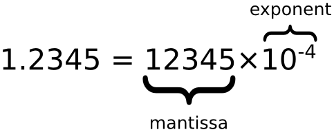
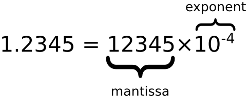

整数（不使用小数点或指数计数法）最多为 15 位。
小数的最大位数是 17，但是浮点运算并不总是 100% 准确
在ES6-ES11/Study2/num-numberExpand中有对进制的详细演示
如果前缀为 0，则 JavaScript 会把数值常量解释为八进制数，如果前缀为 0 和 "x"，则解释为十六进制数。
当数字运算结果超过了JavaScript所能表示的数字上限（溢出），结果为一个特殊的无穷大（infinity）值， 在JavaScript中以Infinity表示。同样地，当负数的值超过了JavaScript所能表示的负数范围，结果为负无穷大， 在JavaScript中以-Infinity表示。无穷大值的行为特性和我们所期望的是一致的：基于它们的加、减、乘和除运 算结果还是无穷大（当然还保留它们的正负号）。
NaN 属性是代表非数字值的特殊值。该属性用于指示某个值不是数字。可以把 Number 对象设置为该值，来指示其不是数字值。
你可以使用 isNaN() 全局函数来判断一个值是否是 NaN 值。
数字可以私有数据进行初始化，就像 x = 123;
JavaScript 数字对象初始化数据， var y = new Number(123);
| Number属性 | |
|---|---|
| 属性 | 描述 |
| Number.MAX_VALUE | 最大值 |
| Number.MIN_VALUE | 最小值 |
| Number.NaN | 非数字 |
| Number.NEGATIVE_INFINITY | 负无穷，在溢出时返回 |
| Number.POSITIVE_INFINITY | 正无穷，在溢出时返回 |
| Number.EPSILON | 表示 1 和比最接近 1 且大于 1 的最小 Number 之间的差别 |
| Number.MIN_SAFE_INTEGER | 最小安全整数。 |
| Number.MAX_SAFE_INTEGER | 最大安全整数。 |
| 数字方法 | |
|---|---|
| 方法 | 描述 |
| Number.parseFloat() | 将字符串转换成浮点数，和全局方法 parseFloat() 作用一致。 |
| Number.parseInt() | 将字符串转换成整型数字，和全局方法 parseInt() 作用一致。 |
| Number.isFinite() | 判断传递的参数是否为有限数字。 |
| Number.isInteger() | 判断传递的参数是否为整数。 |
| Number.isNaN() | 判断传递的参数是否为 isNaN()。 |
| Number.isSafeInteger() | 判断传递的参数是否为安全整数。 |
| 数字类型原型上的一些方法 | |
|---|---|
| 方法 | 描述 |
| toExponential() | 返回一个数字的指数形式的字符串，如：1.23e+2 |
| toFixed() | 返回指定小数位数的表示形式。 |
| toPrecision() | 返回一个指定精度的数字。如下例子中，a=123 中，3会由于精度限制消失: |